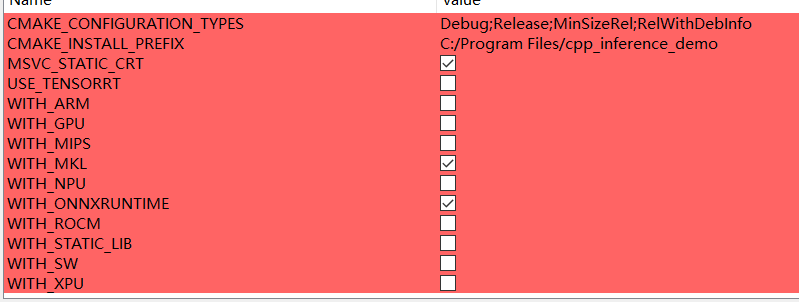
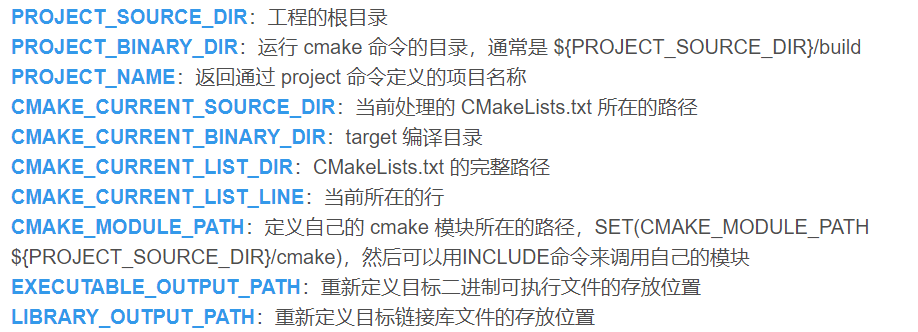

01 CMake的基本用法
CMake基本用法
1.CmakeLists
CmakeLists.txt是 cmake 的构建定义文件，如果工程存在多个目录，需要确保每个要管理的目录都存在一个CMakeLists.txt
2.CMake的语法
现代CMake和之前CMake的区别：
现代CMake是面向
Tartget的，什么添加头文件、库的路径都是针对某个Target添加而不是对整个目录都添加进去。
cmake_minimum_required()
添加CMake编译的最低版本
project()
命名该CMake工程
add_executable(<name> [source1] [source2 ...])
指定该工程编译将生成.exe的可执行文件
add_library(<name> [STATIC|SHARED|MODULE] [source1] [source2 ...])
指定该工程编译生成静态/动态库
aux_source_directory(dir VAR)
查找dir目录下的所有cpp文件并存入变量VAR中
include_directories([dir1] [dir2])
设置整个工程头文件的搜索目录
link_directories([dir1] [dir2])
设置整个工程库文件的搜索目录，很少用，用了这个还是得link_library。只不过用了这个接口后，link_library可以不用绝对路径
1 | target_link_directories(demo |
target_sources(<target> <INTERFACE|PUBLIC|PRIVATE> [items1...]..])
指定编译某target时，使用的源文件(.cpp)
target_link_libraries(<target> ... <item>... ...)
指定编译某target时，使用的库文件，item必须是具体的库文件（不用写后缀，写文件名就行了）
target_include_directories([dir1] [dir2])
指定编译某target时，搜索的头文件路径(.h)
message(变量/字符串)
打印信息
add_subdirectory (source_dir [binary_dir] [EXCLUDE_FROM_ALL])
添加一个子目录并构建该子目录，子目录必须有CMakeLists。子模块会继承其父CMakeLists里面的依赖。比如一个项目里你又想生成.exe又想生成链接库，则应该分别写多个subdirectory。如果要用该接口，那么你子目录里必须得有target才行
source_dir
必选参数。该参数指定一个子目录，子目录下应该包含CMakeLists.txt文件和源文件。子目录可以是相对路径也可以是绝对路径，如果是相对路径，则是相对当前目录的一个相对路径。
binary_dir
可选参数。该参数指定一个目录，用于存放输出文件。可以是相对路径也可以是绝对路径，如果是相对路径，则是相对当前输出目录的一个相对路径。如果该参数没有指定，则默认的输出目录使用source_dir。
EXCLUDE_FROM_ALL
可选参数。当指定了该参数，则子目录下的目标不会被父目录下的目标文件包含进去，父目录的CMakeLists.txt不会构建子目录的目标文件，必须在子目录下显式去构建。
例外情况：当父目录的目标依赖于子目录的目标，则子目录的目标仍然会被构建出来以满足依赖关系（例如使用了target_link_libraries）
install()
把相应的编译后的.exe、.lib、.dll拷贝到指定的文件夹
Option()
CMake中的option用于控制编译流程，相当于C语言中的宏条件编译。在CMake-GUI中看到的可勾选的选项就是通过option生成的

格式option(<variable> "<help_text>" [value])
variable：定义选项名称
help_text：说明选项的含义
value:定义选项默认状态，一般是OFF或者ON，除去ON之外，其他所有值都为认为是OFF。
可以在执行CMake时，在命令里面直接改选项值,CMake执行完后，选项的值会保存到CMakeCache.txt中。
1 | cmake .. -D<variable>=OFF |
add_definitions(-Dxxx)
该命令可以往源代码中添加宏定义，有这句话就相当于在.c的代码中加了#define xxx
该命令也可以在执行CMake时，通过命令行输入，此时会给宏定义添加具体值
1 | cmake .. -DXXX = XXX |
set
1 | set(<variable> <value>... [PARENT_SCOPE]) #设置普通变量 |
file(GLOB xxx 目录/**.cpp*)
将该目录下的所有.cpp文件添加到变量xxx内，可供target_source()等命令使用。除了.cpp也可添加其他格式的文件。
file里的GLOB_RECURSE意思是对该目录下的所有子文件进行递归添加。而GLOB则不进行递归，只在当前文件夹下查找。可以根据需求选择用哪种。*.*为通配符，意为添加文件夹下的所有文件。
3.CMake系统变量

4.CMake添加动态库(以Opencv为例)
动态库的链接需要3大件：.h、.lib/.a、.dll/.so
- 方法一：
(1)在CMakeLists里面需要引入头文件的路径以及.lib文件
.lib文件又称动态库导入文件，只有使用MSVC编译器时，才需要在用动态库的时候使用.lib文件，如果是用的MingGW编译器，那么只需要.dll就行了
1 | target_include_directories(demo |
(2)把.dll文件放到指定的路径下，有2种选择
将
.dll放到该target生成的.exe同目录下将
.dll放到系统的环境变量目录
只需要这两步，然后就可以愉快的写代码了。因为是给target添加的库，所以只要是这个target下的，其他的源文件也能使用这个库。
- 方法二：
对于被install的库，可以不需要把动态库（.so或.dll）给放到可执行文件同目录。使用find_package()添加就行了。
DLL文件搜索路径
1.编译目标代码时指定的动态库搜索路径;
2.环境变量LD_LIBRARY_PATH指定的动态库搜索路径；
3.配置文件/etc/ld.so.conf中指定的动态库搜索路径；
4.默认的动态库搜索路径usr/local/lib。
5.CMake添加静态库
动态库的链接需要2大件：.h、.lib
添加静态库和动态库类似，但它只需要在CMakeLists里写一下就行了
1 | target_include_directories(demo |
6.静态库和动态库的区别
最大的区别就是：生成.exe文件时，静态库是把整个.lib文件都链接进去了，所以生成.exe文件后，你把.lib删了，程序还是能正常运行。
但是使用动态库时，它被链接进.exe的.lib文件只写了接口的一些储存信息（所以又被称为导入库文件），程序运行时会根据该信息到.dll文件里动态加载出你要的函数，所以如果.dll文件被删了的话，编译得到的.exe就不能运行了。但是，由于.dll是动态加载的，所以只改动.dll就可以完成对程序的更新，而不需要对整个工程重新编译一遍。
7.添加在GUI中可修改的变量
如果想在CMake-GUI添加那种可以通过GUI直接修改值的变量，必须写成这样
SET(PADDLE_DIR "" CACHE PATH "Location of libraries")
主要必须有CACHE PATH这个关键字